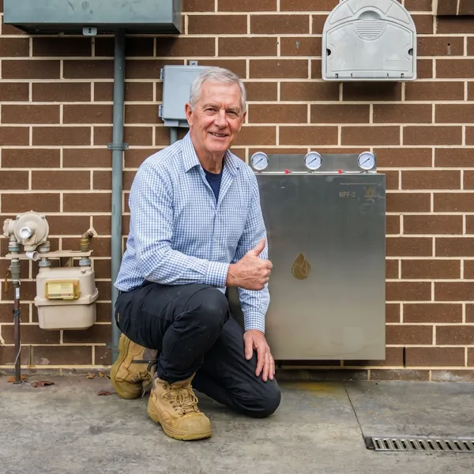

Thanks, We Have Your Enquiry
A licensed Sydney plumber will review what you have sent and get back to you shortly, usually the same business day. Nothing is booked and nothing is charged until you have the price in front of you.
Need it sorted sooner, or want to add photos of an existing system? Call 0421 601 540 or email quote@waterfiltration.sydney and mention your suburb.
Save our number now so you know who is calling: 0421 601 540, Water Filtration Sydney, NSW Contractor No. 358626C.
What Happens Next
From Here To Filtered Water
We call you back
We confirm what you want to change about your water, your property type and whether anything is already installed.
Free water test and fixed price
A licensed plumber tests your water on site at $0 callout, then gives you the system specification, the installed price and the ongoing cartridge costs.
Installed under a NSW licence
Booked at a time that suits you, installed, pressure-tested and explained before we leave. Lifetime labour warranty.

Our Reviews
You Are In Good Hands
5.0 out of 5 on Google. Neat pipework, isolation valves either side, and housings mounted where the sumps can actually be dropped at change time.
Called Ahead, Helpful And Pleasant
Excellent service tech called before arrival and was very helpful and pleasant.
Carmel Bhatty, Google review
Neat, Swift Under-Sink Installation
I recently purchased and had installed the 6-stage water filtration system. The technician communicated clearly his arrival time. The system was installed very neatly in the under-sink cupboard, maximising the remaining space. The technician was an absolute delight throughout and installed the system very swiftly.
Daniel Colantoni, Google review
Happy With My New Water Filter
The technician came out and installed my water filter and I'm very happy with it, highly recommend!!
Lucy Sun, Google review
While You Wait
Worth A Look Before We Call
A few minutes here and you will know what to ask us on the phone.
-
Your Options
Whole-house, under-sink, reverse osmosis and the Home Filtration + Undersink Pure Drinking Water System, with what each one is for.
See the installation options -
Choosing The Right Filter
Which system suits taste and chlorine, sediment, tank water or a whole property, and where reverse osmosis is not the answer.
Compare the filter types -
Cartridges And Running Costs
How often cartridges are replaced, what pressure really depends on, and what we include in a fixed installed price.
Read the FAQs
Licensed, Insured And Backed
Every install is carried out under NSW Contractor and Qualified Supervisor Licence No. 358626C, by a police-checked, ID-verified plumber, with $20M public liability insurance and WaterMark certified components.
Lifetime warranty on our installation labour. If our workmanship ever fails, we come back and fix it for as long as you own the system. Equipment is covered by a 3-year product warranty.
Licensed plumber installed · NSW Contractor No. 358626C · Sydney Metro & Greater Sydney